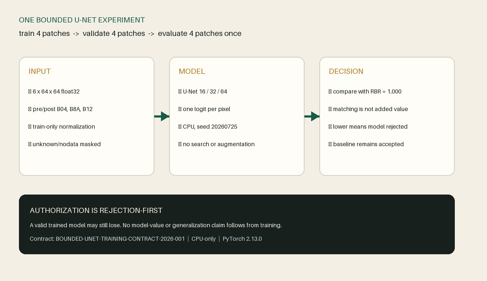
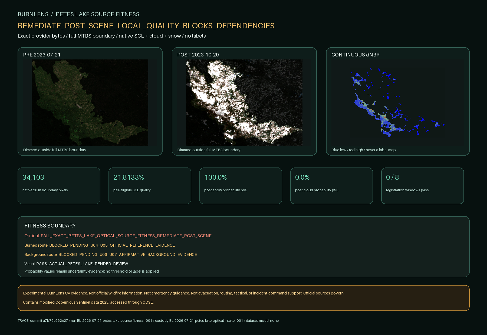

Experimental owner-approved prototype dataset and baseline evidence. Not ground truth, official wildfire information, emergency guidance, field validation, generalization, or a model. Official sources govern.
What is actually proven
A complete Phase Two package, with restraint.
BurnLens preserves source roles, uncertainty, whole-event separation, owner decisions, and failure states. The bounded U-Net experiment is authorized only after this release is verified.
6complete event groups
12native-grid patches
RBR 1.000Dice and IoU on selected test cores
0trained models
- McKay 1035 NE
- Tepee 1144 NE
- Green Ridge 0684 CS
- Grandview 0558 OD
- Ward Creek
- Windigo
Strongest verified result
A bounded U-Net is authorized; RBR remains the bar
The exact dataset, split, QA, normalization, baseline, and tooling package passes all 9 model-readiness gates.

Verified resultOne rejection-first model experiment
Six events contribute twelve native-grid patches and 287 accepted cores. All 531 unknown-ring pixels remain excluded. RBR reaches 1.0 on 89 selected test cores; that result is transparent but not generalization.
BL-2026-07-25-p2o5-t03-u06-readiness-r002
Reliability is visible
Petes Lake stops before candidate generation
BurnLens keeps a snow-dominated source failure and a terminal partial-custody stop instead of manufacturing a sixth event from incomplete evidence.

Retained stopDefer is a product decision
Seven valid assets remain evidence. One failed asset and four unexecuted assets cannot become a complete scientific package. Candidate generation never starts.
BL-2026-07-22-petes-lake-nwi-context-r003
Method and boundaries
Different sources have different jobs.
Source precedence is part of the product. Context is not relabeled as truth, and ambiguous pixels stay unknown.
Source roles
- Sentinel-2 supplies optical evidence under recorded Copernicus attribution.
- BAER supplies field-informed preliminary prototype-positive evidence with program cautions.
- MTBS corroborates burned evidence under program-specific limits.
- RAVG modeled effects remain context and conservative exclusion only.
- No source product is treated as affirmative background truth without a separate route.
What remains unproven
- Owner-approved prototype regions are not independent ground truth.
- The accepted dataset contains twelve 64 by 64 prototype patches from six whole events.
- The accepted cores contain only 287 native 20-meter pixels.
- The balanced review roster does not estimate natural class prevalence.
- Candidate construction used optical and official-reference evidence and may favor the measured spectral separability.
- The RBR result is perfect only on 89 selected prototype test cores and does not establish generalization.
- No model, weights, training run, model evaluation, accuracy claim, or inference output exists.
- BurnLens is not official, endorsed, field-validated, operational, or emergency-ready.
Lineage
Every stage has a version.
Every displayed claim binds to the current portfolio build and evidence-bearing run. The model version stays explicit and null until training succeeds.
| Repository commit | 403a2f3b74cadca59f81a1bf68ab0a4e1d451906 |
|---|
| Application version | 0.52.0 |
|---|
| Target version | target-burn-scar-v0.2.0 |
|---|
| AOI version | multi-event-native-grids-v0.5.0 |
|---|
| Label schema | burn-scar-binary-region-label-schema-v0.3.0 |
|---|
| Prototype label set | owner-approved-prototype-region-labels-v0.5.0 |
|---|
| Dataset version | burnlens-dataset-v0.1.0 |
|---|
| Split version | burnlens-whole-event-split-v0.1.0 |
|---|
| Baseline version | burnlens-baseline-v0.1.0 |
|---|
| Model version | null |
|---|
| Portfolio run | BL-2026-07-25-p2o5-t03-u07-portfolio-r003 |
|---|
Exact bound inputs
records/phase-two/readiness/MODEL-READINESS-AUDIT-2026-001.json — 6,781 bytes — eebd08f25fca9b08b4f8408a768bf30eaa49e661e8aa858234da529a44b10cf4samples/qa/phase-two/model-readiness-v0.1.0/MODEL-READINESS-DECISION-2026-001.html — 6,184 bytes — 6e80c26c29875c3a05249a4f226abcc1113df32c284ba2de2963741066de0557samples/qa/phase-two/model-readiness-v0.1.0/MODEL-READINESS-DECISION-2026-001.png — 71,508 bytes — 6fc5d5b23ee89ccb01c052e2534f2ec42658a01ad6de0d51c73dc61bd57cee21samples/datasets/burnlens-dataset-v0.1.0/DATASET-MANIFEST.json — 55,308 bytes — e0b7ac666a70e96f979c386a9d503ad45ed0baea8f21e3838ba4530d5e3d2d16records/phase-two/manifests/WHOLE-EVENT-SPLIT-2026-001.json — 12,312 bytes — a62e66f4f81a95a56a727b29bb382cb87369306f11e2f2a4527d1c7fb68d0b99samples/baselines/burnlens-baseline-v0.1.0/BASELINE-EVALUATION-2026-001.json — 21,257 bytes — a8ba82f999a87a8114c7fc417126b96c1f031e7eb9e24311df20fe32d7edb221samples/baselines/burnlens-baseline-v0.1.0/BASELINE-EVALUATION-2026-001.html — 3,921 bytes — 109075ca31cb1c01137bdccff5786c862105eb15dc1cbe15c8603dcf3d15fd99samples/cross-event/phase-two/petes-lake/PETES-LAKE-SOURCE-FITNESS-2026-001.png — 626,846 bytes — 4ed3870e37bf68db24805540f00614c5050c064b621ca3fc5e3c0ef244bf0d42docs/phase-two/objective-four/PETES_LAKE_MATERIAL_DEFER_DECISION.md — 6,050 bytes — 6e0cb457261cc0ef48b86b15e8b21a83ec21c4b880990d83b0c79834a26c31e7